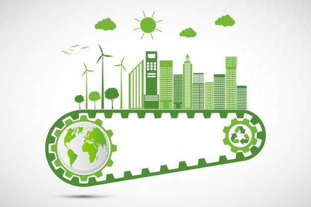

ENVIRONMENT PROTECTION?
Environmental protection refers to the practice of safeguarding the natural environment, including air, water, land, and ecosystems, from harmful activities or degradation caused by human actions. It involves policies, regulations, and actions aimed at minimizing pollution, conserving resources, preserving biodiversity, and promoting sustainable practices to ensure the health and well-being of both present and future generations. This can include efforts to reduce greenhouse gas emissions, protect endangered species, conserve forests and other habitats, promote recycling and waste reduction, and mitigate the impacts of climate change, among other initiatives. Ultimately, environmental protection is essential for maintaining ecological balance, supporting human health and livelihoods, and preserving the planet's natural beauty and resources.
ROLE OF CITIZENS IN SUSTAINABLE DEVELOPMENT AND ENVIRONMENTAL PROTECTION.
Welcome! We're excited to have you join our community of curious minds dedicated to protecting our planet. Here, you'll delve into the world of environmental protection and sustainable development. Environmental protection is the shield that safeguards the air we breathe, the water we drink, and the vibrant ecosystems that sustain us. Sustainable development, on the other hand, is the compass that guides us towards a future where we meet our needs without compromising the ability of future generations to do the same. Imagine a world where bustling cities coexist with flourishing forests, and technological advancements go hand-in-hand with environmental responsibility. This website is your launchpad to explore innovative solutions, inspiring stories, and practical tips to make a difference. Let's work together to create a legacy of a thriving planet for all.
...and the most crucial element in this mission: you! Environmental protection and sustainable development aren't spectator sports. People are the driving force behind positive change. From scientists pioneering groundbreaking clean energy solutions to everyday individuals making conscious choices to reduce waste, every action counts. This website empowers you to discover your role. Whether you're passionate about advocating for environmental policies, making eco-friendly changes in your daily routine, or simply educating yourself and others, your voice and actions matter. Together, we can weave a powerful movement for a sustainable future. Let's explore, learn, and take action together!
As John Muir so eloquently stated, "Everybody needs beauty and places to find it." This website empowers you to discover your role. Whether you're passionate about advocating for environmental policies, making eco-friendly changes in your daily routine, or simply educating yourself and others, your voice and actions matter.
PROMOTING SUSTAINABLE DEVELOPMENT

1. Reduce, reuse, recycle! Minimize waste, give new life to old items, and recycle whenever possible. 2. Conserve energy at home by switching to LED lights, unplugging unused electronics, and embracing natural light. 3. Ditch single-use plastics! Carry a reusable water bottle and shopping bags to minimize plastic pollution. 4. Explore sustainable transportation! Walk, cycle, or carpool when possible, and consider electric vehicles for a cleaner commute. 5. Support eco-conscious businesses! Seek out companies committed to sustainability and ethical practices. Every action, big or small, paves the way for a greener future.
Environmental Benefit
By reducing waste, using less energy, ditching disposables, choosing clean commutes, and supporting sustainable businesses, you can make a big impact. Each action helps conserve resources, fight pollution, and create a healthier planet for all.
Health Benefit
By making small changes, you can create a ripple effect for your health and the planet! Reducing waste and choosing clean commutes means cleaner air. Sustainable practices like cycling and walking boost your well-being. Every step towards a greener future is a step towards a healthier you and a healthier Earth.
ENVIRONMENT PROTECTION

The environment sustains life, providing air, water, and resources. Pollution and deforestation threaten its balance. Through conservation and sustainable practices, we must protect it for future generations.
TAKE ACTIONS
Be a champion for the environment! Reduce waste by saying no to disposables, reuse items whenever possible, and recycle diligently. Conserve energy at home and choose clean transportation options. Support businesses that prioritize sustainability. Every action you take adds up to a greener future.
SPREAD AWARENESS
Be a champion for the environment! Reduce waste by saying no to disposables, reuse items whenever possible, and recycle diligently. Conserve energy at home and choose clean transportation options. Support businesses that prioritize sustainability. Every action you take adds up to a greener future.
INVOLVING YOURSELF

Engagement with influencers amplifies environmental messages, spreading awareness widely. Partnering with NGOs offers direct action opportunities, channeling efforts for impactful change. Together, they inspire collective action for a sustainable future.
Involvement with Influencers:
Engaging with influencers who advocate for environmental protection can amplify your impact. Follow their platforms, share their content, and participate in their initiatives. Collaborate with them on projects or campaigns that raise awareness about pressing environmental issues. By aligning yourself with influencers, you can leverage their reach and influence to inspire others to take action. Attend events where they speak, join their online communities, and contribute your voice to the conversation. Together, you can harness the power of social media to mobilize a larger audience and drive meaningful change for the environment.
Collaboration with NGOs
Partnering with non-governmental organizations (NGOs) dedicated to environmental protection provides opportunities for direct involvement and impact. Research and identify reputable NGOs whose missions align with your values and interests. Volunteer your time, skills, or resources to support their projects and initiatives. Join their advocacy campaigns, participate in clean-up efforts, or contribute to fundraising drives. Collaborate with them on community-based projects that address local environmental challenges. By working alongside NGOs, you can leverage their expertise and resources to make a tangible difference in safeguarding the environment. Together, you can create meaningful solutions and advocate for policies that promote sustainability and conservation.
FAMOUS ENVIRONMENT PROTECTION ACTIVISTS
ENVIRONMENT RELATED NGOs IN INDIA
3. Sankalp Taru Foundation
2.Chintan Environmental Research and Action Group
1.SHUDDHI
Understanding your carbon footprint is a powerful tool for both sustainable development and environmental protection. Here's why: Measures Impact: It quantifies your contribution to greenhouse gas emissions, the key driver of climate change. This awareness is crucial for making informed choices. Promotes Efficiency: By tracking your footprint, you identify areas for improvement. This can lead to reducing energy use, which saves money and lowers emissions. Drives Innovation: As individuals and businesses strive to shrink their footprints, it fuels the development of cleaner technologies and sustainable practices. Guides Policy: By understanding the collective carbon footprint, policymakers can create effective regulations for industries and infrastructure, promoting sustainable development on a larger scale.